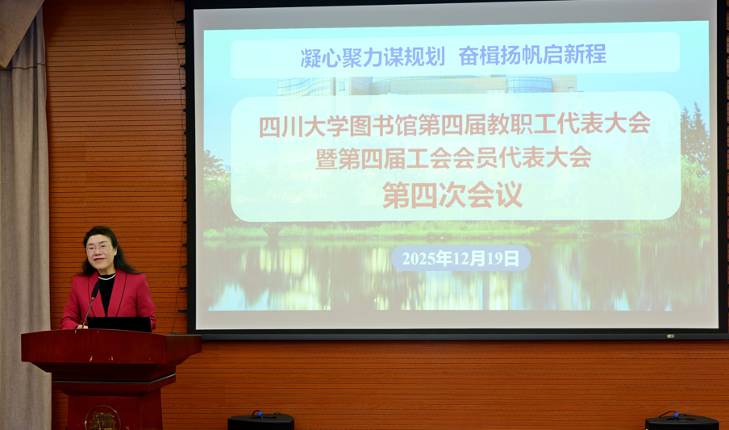

学院通知 · 科研创新
凝心聚力谋规划 奋楫扬帆启新程 ——四川大学图书馆召开第四届教（职）代会暨第四届工代会第四次会议
发布时间：2025-12-22 08:55:49
12月19日上午，四川大学图书馆第四届教职工代表大会暨第四届工会会员代表大会第四次会议在工学图书馆举行。本次会议主题为“凝心聚力谋规划，奋楫扬帆启新程”。图书馆全体领导班子以及“双代会”代表、特邀代表与列席代表共计60余人参加会议。会议由图书馆党委副书记兼纪委书记、副馆长杜小军主持。 会议在庄严的国歌声中开幕。馆长兰利琼作《四川大学图书馆“十五五”事业发展规划》报告，回顾了“十四五”期间图书馆在资源建设、技术赋能、空间优化、文化育人、管理创新等方面取得的显著成效，系统阐述了“十五五”规划的编制思路、主要目标、重点任务与具体举措等，提出未来将着力构建一流文献资源保障体系、人才培养支撑服务体系、科研创新支撑与知识服务体系、虚实融合的智慧空间保障体系、古籍特藏保护利用体系以及馆际协同创新发展体系。她强调，全体馆员要凝心聚力擘画“十五五”新蓝图，同频共振建设面向未来学习的智慧图书馆，以奋斗姿态为学校高质量发展贡献智慧与力量。 会议期间，代表们围绕大会议题进行了分组讨论，认真审议了《四川大学图书馆“十五五”事业发展规划》《图书馆财经工作报告》《图书馆教代会、工会工作报告》《关于进一步加强图书馆组织文化建设的意见》及《图书馆福利费使用管理办法（修订）》。与会代表一致表示，将深入贯彻落实会议精神，群策群力，统筹推进各项重点工作，以优异成绩迎接学校百卅华诞，共同成就“十五五”图书馆事业发展新画卷。在闭幕会议上，大会听取了小组长分组讨论情况汇报及代表们有关建议，开展了馆务公开测评和工会工作测评，并推荐了工会代表参与图书馆物资采购与文献资源采购监督工作。 党委书记秦远清作会议总结讲话。他提到，本次会议是在深入学习贯彻党的二十届四中全会精神、扎实推进“十四五”收官、科学谋划“十五五”发展的关键阶段召开的一次重要会议。与会代表以高度负责的主人翁精神和饱满的热情，积极建言献策，畅所欲言，务实、高效，会议取得了良好成效。他指出，加强图书馆组织文化建设旨在增强政治认同、思想认同和情感认同，激发全体馆员团结一心、接续奋斗，积极投入到图书馆“十五五”建设实践中；各中心（室）要及时将会议审议通过的《四川大学图书馆“十五五”事业发展规划》及图书馆组织文化建设相关意见精神传达至每一位馆员。他代表图书馆党委，就下一步工作提出四点意见：一是坚持政治引领，把稳事业发展“方向盘”；二是聚焦主责主业，当好服务育人“排头兵”；三是强化民主管理，画好共建共享“同心圆”；四是勇于实干担当，争当“三个一流”创建的实干家。 会议号召全体馆员要与时俱进，挺膺担当，在服务学校立德树人任务和世界一流大学建设新征程中，以开放创新的姿态应对挑战，携手共建师生满意、智慧引领的世界一流大学智慧图书馆。 文字：党政办公室 朱元南 图片：党政办公室 黄峻杰、文献服务中心 淳姣
